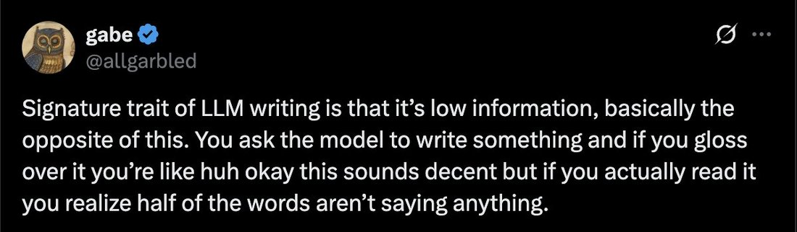

Signature trait of human writing is that it's low information, basically similar to this. You see someone post something and if you gloss over it you're like huh okay this sounds decent but if you actually read it you realize half the words aren't saying anything. They mostly function to signal tribal membership, status, or one of a few cached scripts, like "how was your day" "good" "have a nice day" "lol" "we're so back" etc. You may think this is silly, but for neurotypicals, these are actually building blocks of complex social dynamics. But if you actually care about object-level information, you probably shouldn't look at human writing or listen to human speech. LLMs are good for that.
